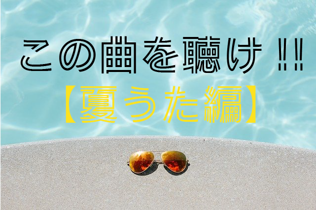

<!DOCTYPE html>
<html lang="ja">

<head>
    <meta charset="UTF-8">
    <meta http-equiv="X-UA-Compatible" content="IE=edge">
    <meta name="viewport" content="width=device-width, initial-scale=1.0">
    <title>Document</title>
    <link rel="stylesheet" href="smarticle1.css">

    <link rel="preconnect" href="https://fonts.googleapis.com">
    <link rel="preconnect" href="https://fonts.gstatic.com" crossorigin>
    <link href="https://fonts.googleapis.com/css2?family=M+PLUS+Rounded+1c:wght@100&display=swap" rel="stylesheet">

    <link rel="preconnect" href="https://fonts.googleapis.com">
    <link rel="preconnect" href="https://fonts.gstatic.com" crossorigin>
    <link href="https://fonts.googleapis.com/css2?family=Kosugi&display=swap" rel="stylesheet">

</head>

<body>
    <header>
        <a href="index.html">
            
        </a>
    </header>
    
    <marquee scrollamount="8">
        <a class="mark">音楽情報サイト ”SONiC MAG" 。オススメの音楽やアーティスト、ポップカルチャーに関する情報を発信！! </a>
        
    </marquee>
    

    <main>
        <div class="tema">

            


        </div>

        <p>新型コロナウイルス流行で自粛自粛の日々にうんざりしている我々の気持ちをよそに、6月は光の速さで通り過ぎてしまいました...。いくらなんでも暑過ぎるだろ!とか、なんで働かないと金もらえないんだ!とかどうしようもないことばかり嘆いている僕です。
            しかしながら、こんな状況でも今年の夏をしっかりと満喫したいところですよね。
            <br>
            ということで今回はこの夏に聞いてほしい曲をピックアップしてみました！
            <br>
            一曲づつ自分なりに解説していきます。
            　　
        </p>
        　
        <div class="topic">
            
            
            <iframe class="playlist" src="https://open.spotify.com/embed/playlist/5wR5tQb7qLCB22kj3tL1O7" width="300" height="415" frameborder="0" allowtransparency="true" allow="encrypted-media">
            </iframe>
            <div class="mokuji">
                <h5>目次</h5>
                <ol>
                    <li><a href="#0">明るい未来 / never young beach</li></a>
                   <li><a href="#a">恋しい日々 / カネコアヤノ</li></a>
                    <li><a href="#b">夏なんです / はっぴいえんど</li></a>
                    <li><a href="#c">ラブホテル / クリープハイプ</li></a>
                    <li><a href="#d">青い珊瑚礁 / 松田聖子</li></a>
                    <li><a href="#e">渚 / スピッツ</li></a>
                    <li><a href="#f">魔法のじゅうたん / くるり</li></a>
                    <li><a href="#h">夏空 / Galileo Galilei</li></a>
                    <li><a href="#i">若者のすべて / フジファブリック</li></a>
                    <li><a href="#g">あんなつぁ / 浪漫革命</li></a>
                </ol>
            </div>
            
        </div>

        <div id="0" class="artist">
            <h2>1.明るい未来 / never young beach</h2>
            <hr color="black" align="center" width="57%" size="1">
            <div class="audio">
                <iframe src="https://open.spotify.com/embed/track/5Gbgx64AeuCcXIFys7ymqK" width="400" height="400"
                    frameborder="0" allowtransparency="true" allow="encrypted-media">
                </iframe>
                <p>一曲目にご紹介するのはハワイアンなテイストを感じさせる5人組ポップバンド、"never young beach(ネバーヤングビーチ)" 
                    通称ネバヤンの「明るい未来」です。歌詞の中に夏を連想させるワードが入っている訳ではありませんが、この曲を聞いたら夏
                    を感じざるを得ない、それぐらい陽気なメロディーだと思います。何と言ってもボーカルの低くて良い意味で古臭い歌い方がバンド
                    サウンドに味を出していると思います！ ちなみに、ボーカルの方のお兄さんは人気俳優・高橋一生さんだそうです。兄弟二人揃って良い声
                    ...！
                    
                </p>
            </div>
        </div>

        <div id="a" class="artist">
            <h2>2.恋しい日々 / カネコアヤノ</h2>
            <hr color="black" align="center" width="57%" size="1">
            <div class="audio">
                <iframe src="https://open.spotify.com/embed/track/592H7XLKNdYxyakla30ejk" width="400" height="400"
                    frameborder="0" allowtransparency="true" allow="encrypted-media">
                </iframe>
                <p>
                お次はネクストあいみょんとの呼び名も高いシンガーソングライター、"カネコアヤノ"の「恋しい日々」です。なんとなく70~80年代
                    を感じさせる曲調が耳に残って離れません！サビのキャッチーなメロディ、洗濯物を干さなくちゃ〜というフレーズは一日中頭に
                    残って離れません！彼女の大砲のような力強さを持つ歌声が今の音楽シーンに殴り込んでくれることを願っています。
            　　 </p>
            </div>
        </div>

        <div id="b" class="artist">
            <h2>3.夏なんです / はっぴいえんど</h2>
            <hr color="black" align="center" width="57%" size="1">
            <div class="audio">
                <iframe src="https://open.spotify.com/embed/track/5b2GuMWFBwmljJ7Gq6vkZO" width="400" height="400"
                    frameborder="0" allowtransparency="true" allow="encrypted-media">
                </iframe>
                <p>
                 続いては、日本ポップス、ロック界の大重鎮にしてパイオニアバンド"はっぴいえんど"の「夏なんです」です。ぼんやりとした夏の暑さにそっと吹き込んでくる優しい
                 風のような脱力感のある曲調が心地よくてたまりません。前述した、カネコアヤノ氏、星野源氏、サカナクション山口一郎氏など、現在活躍する数えきれないほどのア
                 ーティストがこのバンドに影響を受けています。夏なんですが収録された風街ろまんは日本音楽史に残る圧倒的名盤なのでぜひチェックしてみてください！
                 
                </p>
            </div>
        </div>

        <div id="c" class="artist">
            <h2>4.ラブホテル / クリープハイプ</h2>
            <hr color="black" align="center" width="57%" size="1">
            <div class="audio">
                <iframe src="https://open.spotify.com/embed/track/3d3bbSJAvzCBnAcB1uoXQ2" width="400" height="400"
                    frameborder="0" allowtransparency="true" allow="encrypted-media">
                </iframe>
                <p>
                    衝撃的なタイトルになっているこの曲は今や大人気のロックバンドクリープハイプの一曲です。湿っているけどどこかさっぱりしたメロディ、
                    音作りがこの曲をすごく夏たらしめている気がして今回チョイスしてみました。このラブホテルという曲でもそうなんですが、
                    このバンドの曲はドラマ性とメッセージ性が凄まじい...。ボーカル・尾崎世界観氏が手がける歌詞には、愚かしさや無常観などの人間らしさ
                    生々しく描かれていて、歌詞を見るたびに日本語の美しさが詰め込まれています。繊細で、どこか危なっかしくて、まさしくロックバンドだなと思い知らさされます。
            　　</p>
            </div>
        </div>

        <div id="d" class="artist">
            <h2>5.青い珊瑚礁 / 松田聖子</h2>
            <hr color="black" align="center" width="57%" size="1">
            <div class="audio">
                <iframe src="https://open.spotify.com/embed/track/6uPyPOSTwYCgPjYINvXUKl" width="400" height="400"
                    frameborder="0" allowtransparency="true" allow="encrypted-media">
                </iframe>
                <p>
                    ここに来てまさかの選曲、松田聖子で青い珊瑚礁。言わずと知れた日本の名曲です。曲冒頭のハイハットが刻むリズムで聖子ちゃんの透き通った歌声を聞くと自分自身も
                    綺麗になったように錯覚してしまいます。松田聖子氏の曲はとにかく良い曲、良いメロディ、それに尽きます。作曲家のセンスとそれを
                    表現する聖子ちゃんのポテンシャルが生み出す化学反応が名曲をバンバン世に送り出してくれました。才能に感謝です。
            　　</p>
                
            </div>
        </div>

        <div id="e" class="artist">
            <h2>6.渚 / スピッツ</h2>
            <hr color="black" align="center" width="57%" size="1">
            <div class="audio">
                <iframe src="https://open.spotify.com/embed/track/24jtZbj9rh5RWoLGeibPuz" width="400" height="400"
                    frameborder="0" allowtransparency="true" allow="encrypted-media">
                </iframe>
                <p>
                    続いては日本を代表するポップバンド"スピッツ"の「渚」。涼しげなリズム、ギターの音色、草野マサムネ氏の歌声が心地よい
                    耳で感じるクーラーのような一曲です。(⬅︎ちょっと何言ってるかわからない) この曲は現実と妄想の恋愛について歌っているようで、ぼやけた六等星」「思い込みの恋」「幻よ覚めないで」
                    という歌詞でそれらを暗示していて、すごく文学的で美しい歌詞です。デビュー当時から現在に至るまで音楽シーン最前線を走り続けている彼らは多くのアーティストから神のような存在とし
                    て崇め奉られています。
            　　</p>
            </div>
        </div>

        <div id="f" class="artist">
            <h2>7.魔法のじゅうたん / くるり</h2>
            <hr color="black" align="center" width="57%" size="1">
            <div class="audio">
                <iframe src="https://open.spotify.com/embed/track/1JnPRgM70nb8aYme37Fh5B" width="400" height="400"
                    frameborder="0" allowtransparency="true" allow="encrypted-media">
                </iframe>
                <p>
                続いては日本のサブカルチャーを陰ながら支えてきたバンド"くるり"の「魔法のじゅうたん」。この曲は気持ちよくてどこか切ない昼下がりの夏空
                のような曲だなと勝手に想像してしまいます。歌詞の中に "今日は青空だけど寂しいなんて" という歌詞がすごく印象的で、沈んでいる自分の気持ちとは
                裏腹に輝く綺麗な空は勝手だなという生きていれば時々湧き立つ感情をこんなに素直に表現できる優しさと強さがすごく好きです。
                くるりというバンドは「好きなアーティストなに？」と尋ねられた時に、本当は一番好きだけどなんとなく他のグループを答えてしまうという
                密教的なバンドだと勝手に思っているんですが、そんな感じも含めてくるりの良さであるし、そうであって欲しいとも思っています。
                
                </p>

            </div>
        </div>

        <div id="h" class="artist">
            <h2>8.夏空 / Galileo Galilei</h2>
            <hr color="black" align="center" width="57%" size="1">
            <div class="audio">
                <iframe src="https://open.spotify.com/embed/track/2JJq8CXhMGrjiXNS0hXrep" width="400" height="400"
                    frameborder="0" allowtransparency="true" allow="encrypted-media">
                </iframe>
                <p>
                　2016年に惜しくまれつつ解散したオルタナティブロックバンド”Galileo Galilei"のデビューシングル「夏空」。題名の通り夏を感じられる
                曲なので選曲しました。年を重ねるたびに言葉の意味を本当に理解できる曲だと思います。Galileo Galileiは王道ロックナンバーからシューゲ
                イザーチックな攻めたナンバーまでジャンルの守備範囲が広いのでいろんな角度から楽しめます！
              　　</p>
            </div>
        </div>

        
        <div id="i" class="artist">
            <h2>9.若者のすべて / フジファブリック</h2>
            <hr color="black" align="center" width="57%" size="1">
            <div class="audio">
                <iframe src="https://open.spotify.com/embed/track/5dH4asCl80Mvbsoz6zJVyZ" width="400" height="400"
                    frameborder="0" allowtransparency="true" allow="encrypted-media">
                </iframe>
                <p>
            　　　この曲は夏のプレイリストには絶対外せません！！"フジファブリック"の「若者のすべて」。冒頭の "真夏のピークが去った"という歌詞で
            がなんとも言えない哀愁をおびていて心を掴みにかかってきます。そこからノスタルジックな描写、メロディが連続するというどうしようもない程エモ
            ーショナルな一曲となっています。ボーカルの志村正彦氏が2009年に他界してからもギターの山内総一郎氏がボーカルとしてその役目を引き継ぎ今も解
            散することなくフジファブリックとして活動しています。

              　　</p>
            </div>
        </div>

            <div id="g" class="artist">
            <h2>10.あんなつぁ / 浪漫革命</h2>
            <hr color="black" align="center" width="57%" size="1">
            <div class="audio">
                <iframe src="https://open.spotify.com/embed/track/6e2YzYkpOFIEqHoOIGV06B" width="400" height="400" 
                frameborder="0" allowtransparency="true" allow="encrypted-media">
                </iframe>
                
                <p>
                  少し風変わりなタイトルのこの曲は京都発5人組ロックバンド"浪漫革命"の一曲です！7割以上が あんなつぁ の連呼という衝撃的な
                  歌詞となっています。70~80年代を彷彿とさせるどこか懐かしくも、キャッチーなメロディの曲です。今年さらに飛躍するバンドだと
                  思います。今ならまだギリギリ古参ぶれると思います！
                  ミュージックビデオがすごく良いのでそちらもチェックしてみてください！
                  
              　　</p>
            </div>
        </div>

    <div class="matome">
        <h2>まとめ</h2>
        <hr color="black" align="center" width="57%" size="1">
        <p>"この曲を聴け！！【夏うた編】" いかがだったでしょうか？　皆さんのちょっぴり嬉しい発見の一助となれたのなら幸いです。ぜひこのプレイリストで
        この夏を余すことなくエンジョイしましょう！！　ではまた。</p>
    </div>    　　　　

    </main>

    <footer>

    </footer>

</body>

</html>